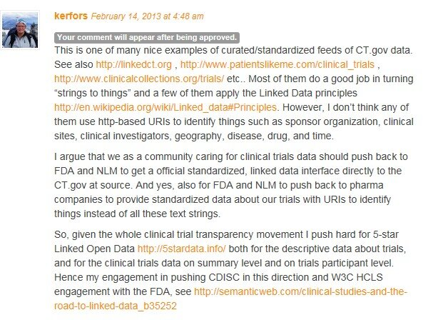

February 2013
Looks really interesting >> RT @agonzalezyanes: COGS vocabulary for ETL workflows by @deri vocab.deri.ie/cogs# #linkeddata
Today Eric and Charlie will present #CDISC2RDF at @CSHALS #cshals iscb.org/cshals2013-pro… Look out for a forthcoming blog post
+1 RT @ORCID_Org: Sweden has endorsed ORCID iD for contributor identification in the Swedish research system: kb.se/Dokument/Om/pr…
+1 RT @marcusosterberg: Bloggat om hypen kring #BigData och problemet med att ha tveksam kvalitet på sin data: webbfunktion.com/big-data-ar-di…
Blog post by @eClinical_Jen on Sex / Gender bioclinica.com/blog/everythin… < Checkout: Reality behind Demog. data ceur-ws.org/Vol-833/paper2…
#Head2Head Industry should improve Clinicaltrials.gov < See "From strigs to things" lists.w3.org/Archives/Publi…
Tonight I'll follow the feed from @PharmaTimes #head2head debate between @bengoldacre and Stephen Whitehead, @ABPI_UK
Call for Participation “#OpenData on the Web” Workshop. 23-24 April 2013, Google Campus, London w3.org/2013/04/odw/ #odw13
Nice sub-title for a @www2013rio workshop: Big things come in small packages oak.dcs.shef.ac.uk/msm2013/motiva… #MSM2013 #www2013
@DocPhilT Yeah, I like the approach @vrandezo describes in his post. And the #wikidata model, see twitter.com/kerfors/status… cc:@danbri
Summary from Convergence meeting across EU projects: semantic interop for Clinical Research & Patient Safety w3.org/wiki/HCLS/Clin…
Case for #LinkedData > MT @charlesornstein: Hopelessly neglected: infrastructure for synthesizing evidence ... @bengoldacre says
+1 “The world is complex. #Wikidata aims to collect structured knowledge about this complex world” @vrandezo ur1.ca/cvhlu
MT @BVatant: A small step Google could do for the #SemanticWeb #KnowledgeGraph blog.hubjects.com/2013/02/a-smal…
"Active PURLs for Clinical Study Aggregation" at AstraZeneca by @Prototypo @TPlasterer 3roundstones.com/2013/02/20/act… #CSHALS #CSS2013
VoID validator from @Open_PHACTS openphacts.cs.man.ac.uk:9090/OPS-IMS/valida… via @laurentlefort #LinkedData
Colleagues ask me: - When do you find the time for all this social media stuff? - When I'm commuting of course! #Västtrafik
How about bringing Cars to Web (URI per car) > MT @w3c: Automotive Industry Launches W3C Group: Bringing Web to Cars dlvr.it/2zZ4t7
Time to catch up with all of this >> MT @ericaxel: New post: #Wikidata Phase 2 In Full Swing bit.ly/12Rn0o6
Thread on #HL7 #FHIR list on allergies: concern and/or problem resource. A case for OGMS #ontology ? code.google.com/p/ogms/
“on-the-web archiving as a mandatory part of the regulatory submission for industry trials” @stephensenn is.gd/GuWYUj #ctdata
Så sant (true :) RT @tkb: “In my country ‘freaking awesome’ is translated as ‘not bad’” @HansRosling live.worldbank.org/financial-incl…
@martinalbrekt For a quick intro to URI check-out "What Do RDF and SPARQL bring to Big Data Projects" online.liebertpub.com/doi/pdfplus/10…
I just posted on the W3C HCLS list "From strings to things: ClinicalTrials.gov" lists.w3.org/Archives/Publi… #ctdata #linkeddata
Congrats: PhD defence by @ErikSundvall youtu.be/0lpHFG3Dhts Scalability and Semantic Sustainability in EHR Systems
"From strings to things" for Drugs in clinicaltrials.gov citeulike.org/user/cdsouthan… by @cdsouthan #linkeddata #ctdata #InChIKey
+1 "InChI in the wild: An Assessment of InChIKey searching in Google" jcheminf.com/content/5/1/10 by @cdsouthan #InChIKey #InChI
+1 MT @bobdc: New blog post "'RDF and SPARQL' article published in #BigData journal" snee.com/bobdc.blog/201…
Good input from @cdsouthan blog.karmadata.com/2013/02/11/loa… to the discussion on #LinkedData for clinicaltrials.gov
Nice poscast for my morning walk :) RT @SemanticWeb: The Future of Libraries, Linked Data ... semanticweb.com/the-future-of-… via @SemanticWeb
Interesting discussion re. #LinkedData for clinicaltrials.gov on @karmadataBK's blog post blog.karmadata.com/2013/02/11/loa…
@dianthusmed Awaiting approval blog.karmadata.com/2013/02/11/loa… meanwhile see screenshot of it

@karmadataBK See my comment on your post re. pushing back to FDA & NLM for #ctdata as 5stardata.info cc: @trialsonline @dianthusmed
@dianthusmed 3 stars. 4 stars for the inofficial linkedct.org/about/. 5 stars req. standardisation of e.g identifiers (URIs) for sites etc
Thanks for sponsoring #CDISC2RDF > MT @FrankVanHarmele: Clinical Studies And The Road To Linked Data bit.ly/YcnFub
@dianthusmed @trialsonline "In the spirit of" clinicaltrials.gov make it #LinkedData #OpenData 5stardata.info at source.
Short blog post in preparation for a series of posts describing #CDISC2RDF kerfors.blogspot.se/2013/02/cdisc2…
I just joined this >> RT @ahier: LIVE #ONChangout w/ @ahier @Fridsma @amalec youtube.com/user/ONCHealth…
Our #CDISC2RDF project > RT @SemanticWeb Clinical studies and the road to Linked Data semanticweb.com/clinical-studi…
+1 RT @kristiannorling Where Both Parents Can "Have It All" < Scandinavia at its best feeds.harvardbusiness.org/~r/harvardbusi…
Interesting > Permission Ontology for informed consent and HIPAA compliance ontology.buffalo.edu/ctsa/Orlando-F… #CTSA via @kristiholmes
MT@bioontology MIREOT Protege plugin bitbucket.org/sohj/mireot-pr… #CTSA #ontology << @TopQuadrant Something also for TopBraid Composer?
Thanks @kristiholmes @bioontology for the nice feed of tweets from the #ctsa #ontology workshop ncorwiki.buffalo.edu/index.php/CTSA…
Nice - I was interviewed by @Jenz514 "Clinical Studies And The Road To Linked Data" semanticweb.com/clinical-studi… via @ericaxel #CDISC2RDF
Interoperability Standards – Shades of Gray | Health IT Buzz healthit.gov/buzz-blog/elec… via @motorcycle_guy
Ontologies for clinical and translational research #CTSA workshop ncorwiki.buffalo.edu/index.php/CTSA… 11-12 Febr.
@johaneltes Ja, sameAs är kraftfullt (men också lurigt). Kolla också in callimachusproject.org/index.xhtml?vi… Här en AZ tillämpn. iscb.org/cms_addon/conf…
.@johaneltes Checkout > “@AlBaker_Dev: #GroovySparql now up on Maven central. #LinkedData now easy as this gist.github.com/AlBaker/4747365”
First week of #SemanticWeb course openhpi.de/course/semanti… finalised. Nice videos/slides, but I find the tests quites strange.
I have just pointed colleagues in #EHR4CR project to the QUDT ontology and SPIN functions by @ralphtq linkedmodel.org/doc/qudt/1.1/i…
Longer posts on publ of trial results to read errorstatistics.com/2013/01/06/gue… is.gd/CS2GjS
via @PHUSETwitta @kevin2kane @dianthusmed
via @PHUSETwitta @kevin2kane @dianthusmed
@JeniT @der42 Nice. Would like to see #ISO11179 github.com/sinaci/semanti… on the list cc: @ldodds @danbri @aasinaci
.@LexJansen @PHUSETwitta How about a machine processable Data Guide? In OWL/RDF & SPIN/RDF, see nice SPIN ex. topquadrant.com/products/SPIN.…
MT @bengoldacre: @GSK support #AllTrials badscience.net/2013/02/this-i… Amazing. Fantastic. < How about CSRs as 5stardata.info ?
MT @PHUSETwitta: Calling all experts! Emerging Techn. WG FDA/PhUSECSS #SemanticWeb ow.ly/hoGXB < ping @w3c w3.org/wiki/HCLS/Clin…
MT @PHUSETwitta: Calling all experts! Emerging Technology WG FDA/PhUSECSS #SemanticWeb ow.ly/hoGXB < ping @BernHyland
@bgood BRIDG 3.2 (same info as in UML) bridgmodel.nci.nih.gov/news-folder/br… RIM not yet officially publ. cc: @andrewsu @bioontology @egonwillighagen
@andrewsu .. and also of the data elements in data exchange standards e.g cdisc2rdf.com cc: @bioontology @egonwillighagen